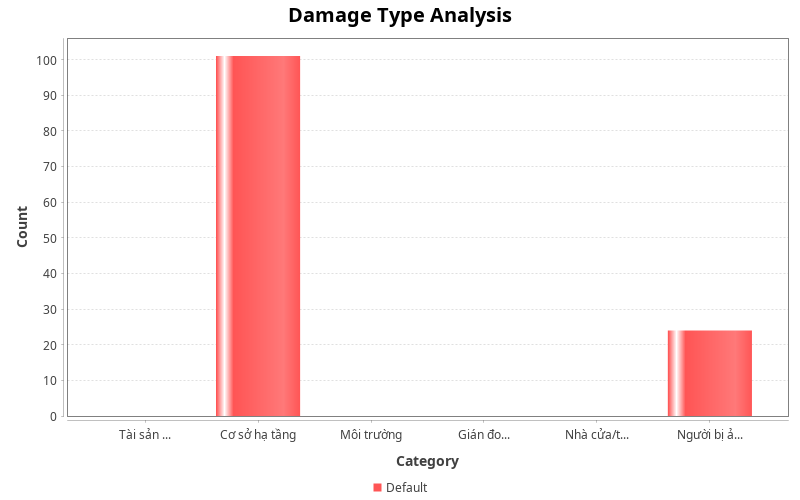
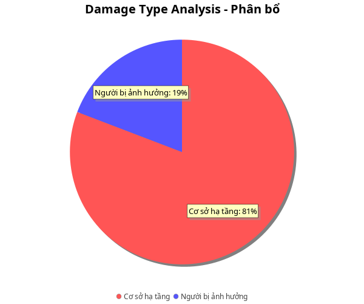

Báo cáo phân tích thiệt hại từ Bão Yagi dựa trên 125 lượt đề cập trong các bài đăng mạng xã hội. Loại thiệt hại được nhắc đến nhiều nhất là 'Cơ sở hạ tầng'. Các loại thiệt hại được ghi nhận bao gồm: Cơ sở hạ tầng (101 lượt); Người bị ảnh hưởng (24 lượt). Đáng chú ý, 'Cơ sở hạ tầng' chiếm tới 81% tổng số lượt đề cập, cho thấy đây là vấn đề cấp bách nhất cần ưu tiên xử lý.
Biểu đồ phân tích


Thống kê dữ liệu
Thiệt hại được nhắc đến nhiều nhất
Cơ sở hạ tầng
Tổng lượt đề cập thiệt hại
125
Nhãn
Giá trị
Loại
Nhóm
Tài sản cá nhân
0
damage
-
Cơ sở hạ tầng
101
damage
-
Môi trường
0
damage
-
Gián đoạn hoạt động kinh tế
0
damage
-
Nhà cửa/tòa nhà hư hỏng
0
damage
-
Người bị ảnh hưởng
24
damage
-
Không tìm thấy dữ liệu phù hợp
Phân tích chuyên sâu
'Cơ sở hạ tầng' là loại thiệt hại được quan tâm nhất với 101 lượt đề cập, chiếm 81% tổng số.
'Người bị ảnh hưởng' được nhắc đến 24 lần (19%), phản ánh mối quan tâm đáng kể từ cộng đồng.
Kết luận
Thiệt hại từ Bão Yagi tập trung chủ yếu vào lĩnh vực 'Cơ sở hạ tầng', phản ánh đúng thực tế thiệt hại nặng nề mà cơn bão đã gây ra. Sự phân bố đề cập giữa các loại thiệt hại cho thấy mối quan tâm đa dạng của cộng đồng đối với các khía cạnh khác nhau của thảm họa.
Khuyến nghị
Ưu tiên nguồn lực khắc phục 'Cơ sở hạ tầng' - lĩnh vực được cộng đồng quan tâm nhất, đồng thời không xem nhẹ các loại thiệt hại khác.
Triển khai khảo sát thực địa để đối chiếu và bổ sung thông tin từ mạng xã hội nhằm có cái nhìn toàn diện về thiệt hại.